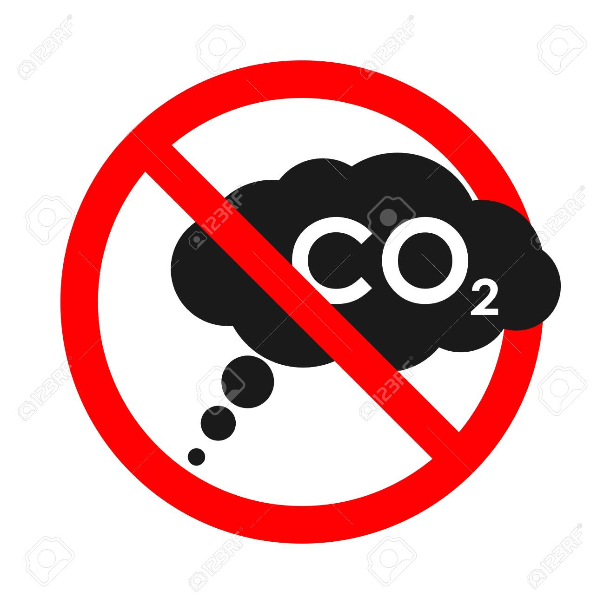
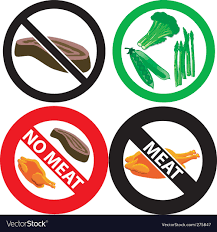
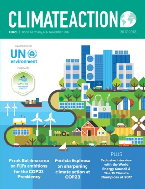

As a individual
In order to reduce the amount of warming, we need to reduce the amount of greenhouse gas in the atmosphere. Carbon dioxide (CO2) stays in the atmosphere for 30 to 100 years until most of it is removed by plants and natural processes, although about 20% of it can stay for thousands of years.
Right now, we put more greenhouse gas into the atmosphere than is taken out by natural processes. So even if we put a little less in, the concentrations will continue to rise over time. We have to put a lot less in if we want to have less greenhouse gas in the atmosphere. And we have to start now.

A good motto is “Burn calories, not fossil fuels.” For example, we could walk or ride a bicycle instead of getting into the car to go just a few blocks away, and we can rake leaves by hand rather than using a leaf blower.
Almost everything we buy was made using fossil fuels. So we can reduce our carbon footprint by buying less, reusing more, repairing things instead of replacing them, and using less packaging.
A very important way to cut our use of fossil fuels is by using renewable energy instead. We can do that by putting solar panels on the roofs of our homes and businesses. New York State helps people switch to solar energy by helping with the cost of installing solar panels. If solar isn’t practical for us, we can ask the electric company to send us electricity from renewable sources like waterfalls, solar farms, and windmills. We can also ask our government to set aside money for renewable energy development.

About 14% of all greenhouse gas emissions comes from raising farm animals for food. Much of this is from the methane gas that animals expel as they digest their food; the rest is from transportation and other uses of energy. Changing how we raise farm animals could cut that by 30%. We can help by eating less meat and dairy, or by buying our meat and dairy products from farmers who use climate-smart practices.
As a community
People usually don’t want to do things that are inconvenient or that will cost them money. One of the problems is that when we make poor choices today, the damage takes place in the future, and it’s hard for people to make the connection between their choices today and future consequences. One way to fix this is to make those costs fall on the people who make those choices today. This will make some things we do today more expensive, but that will encourage people and businesses to make better choices.

There are ways of calculating future costs and adding them to the cost of things now, so that people see the true long term cost. One way is by charging industries a carbon tax (an extra tax on the things they do that contribute to the release of greenhouse gases). Another way is by making regulations (rules) that make it illegal to hurt the environment or that make industries pay a penalty if they do it. This will make them want to change the way they do things. For example, because of laws in California, manufacturers are already making many more electric cars, and many are putting solar panels on factory roofs to run their machinery.